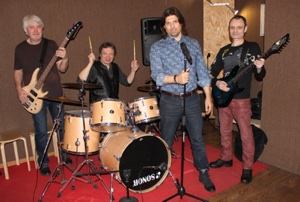

|
|
НОВОСТИПОИСК КЛАВИШНИКАРок группа ДИВА объявила о начале прослушивания кандидатов на роль клавишника группы. Наличие своего муз. материала, а также владение вокалом активно приветствуется. Песни русскоязычные в стиле рок, рок-н-ролл и проверенные англоязычные хиты. Репетиции днем м.Партизанская, RepZona. 14 марта 2019 ДЕНЬ РОЖДЕНИЯ ГРУППЫ Сегодня объявлено о создании рок группы ДИВА в составе: Дмитрий Богомолов (гитара), Иuорь Груздев (ударные), Василий Суворов (бас), Алексей Лютый (вокал). Название группы выбрано по первым буквам имен его участников-основателей. Основным направлением группы будет популяризация русского рока, путём создания собственных музыкальных произведений, а также исполнение каверов лучших мировых хитов. 4 февраля 2019 |
| © DIVA 2019 |